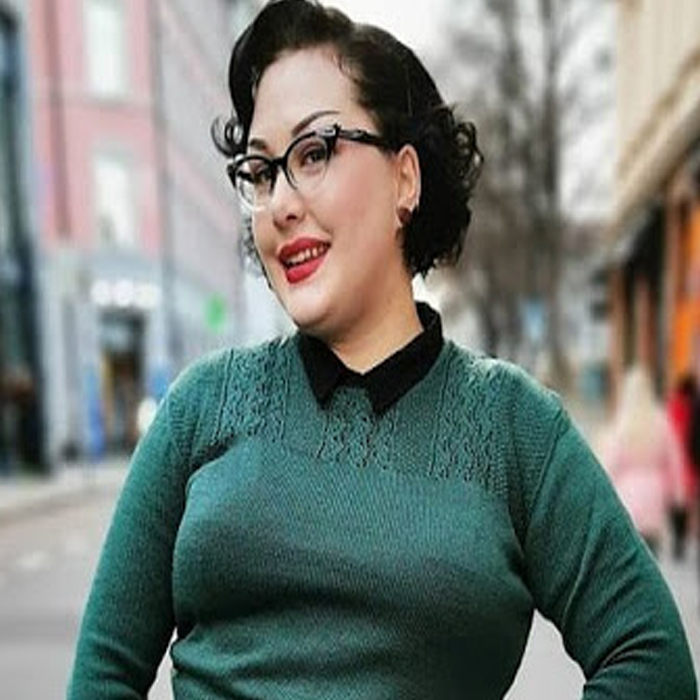

Коллекция пряжи
Мы предлагаем пряжу самых известных брендов , наш ассортимент пряжи постоянно расширяется. Если Вас интересуют пряжа в мотках, наш интернет магазин предлагает купить пряжу с возможностью бесплатной доставки (при сумме заказа от 4500,00 руб.). Наших покупателей мы часто радуем приятными скидками, проводим акции и формируем специальные предложения на покупку тех или иных товаров. У нас можно купить сопутствующие товары: интернет магазин «Homa Yarn» реализует пуговицы и застежки, крючки и спицы – многие по ценам распродаж идентичных сайтов.
{{category}}
{{wine.Название}}
Цвет - {{wine.Цвет}}
Цена - {{wine.Цена}}
ИНФОРМАЦИЯ О ДОСТАВКЕ
Возможна доставка:Самовывоз - из г. Ступино. Курьерская Служба Сдэк - можно выбрать как самовывоз из ближайшего пункта выдачи так и доставку или экспресс доставку до двери. Доставка в области и регионы: В области и регионы отправляем только по предоплате! Курьерской службой в пункты ПВЗ либо доставка до двери, обычная или Экспресс, выбрать способ доставки и увидеть ее стоимость можно при оформлении заказа. Через ЕМС Почту России стоимость тоже можно узнать во время оформления заказа. Через Почту России посылкой, стоимость можно узнать при оформлении заказа, главное ввести индекс. Также можно выбрать ускоренный вариант Почты России - Авиа - 1 класс почты Росси Отправка посылок осуществляется в течении 1, максимум 3х рабочих дней. Для заказа пряжи звоните по телефону +7(916)412-75-58

“Когда я вплотную занялась вязанием (появилось много свободного времени), я обратила внимание на пряжу Alize. Она очень популярна среди вязальщиц и есть практически в любом магазине пряжи.Из плюсов хочу отметить доступную цену , удобную толщину нити, которая позволяет вязать много разных моделей, хорошая цветовая палитра, а также меланжевые оттенки.Расход у пряжи небольшой: на взрослую шапку с отворотом у меня уходит 70-80 грамм. Вяжу спицами №4..”
— Марина Ли
“Клубочки. Очень приятные, хорошо смотанные моточки. Огромнейшая цветовая палитра, которая пополняется. Можно найти очень яркие оттенки, пастельные, темные, много видов синих и голубых, цвет джинса, они прекрасно между собой сочетаются. Эти ниточки - мой восторг! Обожаю их держать в руках, релаксирую за вязанием, особенно ночами.”
— Евгения Кабердеева
“Данная пряжа подходит для вязания детских вещей, хотя я связала из нее несколько свитеров, но просто у меня осталась куча этой пряжи от пледа. Детям она подойдет именно из-за ее мягкости, и того, что не линяет.Так же из нее хорошо вяжутся игрушки, пледы и прочие вещи, которые будут часто на себе испытывать так называемую механическую нагрузку”
— Анна Власова